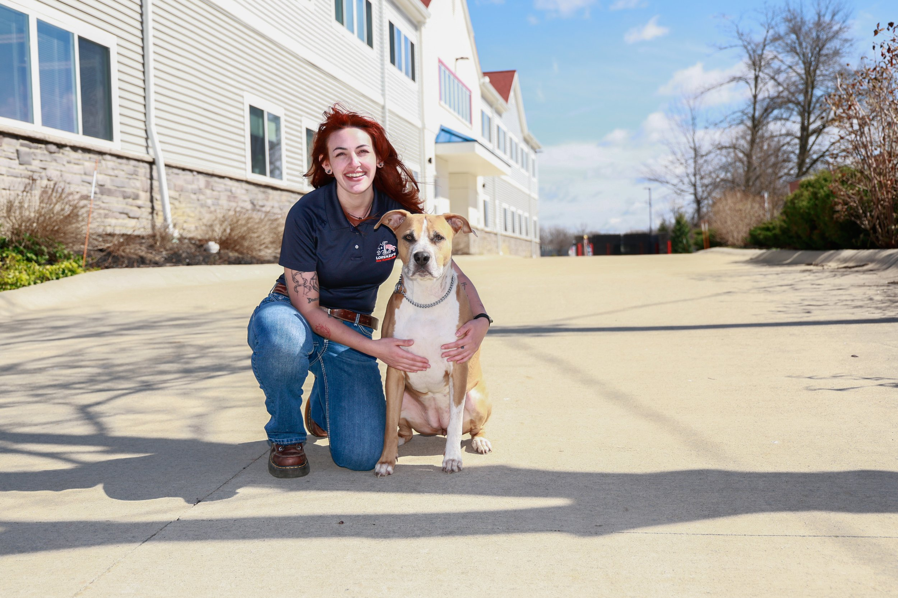

Genevieve Twilla
North Park, CA
Genevieve “Skylar” Twilla combines lifelong animal passion with service-industry communication skills to help families build confidence and consistency.

North Park, CA
Genevieve “Skylar” Twilla combines lifelong animal passion with service-industry communication skills to help families build confidence and consistency.
Born in San Diego and raised in Chula Vista, California, Genevieve “Skylar” Twilla now calls North Park home. With a lifelong love for animals and a genuine passion for helping others, Skylar brings enthusiasm, compassion, and dedication to every dog and family she works with. Skylar's journey into professional dog training began through a friend who introduced her to Lorenzo's Dog Training Team.
Already passionate about animals, she was drawn to the opportunity to make a meaningful difference in the lives of dogs and their owners. Through Lorenzo's proven training methods and philosophy, Skylar found a way to help dogs achieve greater success while giving owners the tools and confidence needed to build stronger relationships with their pets. Having spent her entire career working in the service industry, Skylar has developed exceptional communication and people skills.
Her experience working with individuals from all walks of life allows her to connect with clients, understand their unique challenges, and guide them through the training process with patience and encouragement. Combined with her love for dogs, this background helps her create positive and rewarding experiences for both dogs and their families. As a trainer, Skylar is driven by a simple but powerful mission: to help as many dogs and people as possible.
She is committed to improving the lives of the families she serves, continuing her education, and expanding her understanding of canine behavior, personality differences, and effective training techniques. Her goal is not only to help dogs become well-mannered companions but also to empower owners with the knowledge and skills they need for long-term success. Outside of training, Skylar enjoys spending time outdoors, hiking with her dog, drawing, staying active, and working out.
Her active lifestyle and appreciation for the outdoors reflect the same energy and dedication she brings to her work as a dog trainer. With a passion for animals, a heart for helping people, and a commitment to continuous growth, Skylar is proud to be part of Lorenzo's Dog Training Team and looks forward to helping dogs and their owners achieve lasting success together.
Send your request directly to Lorenzo's office with Genevieve Twilla already assigned as the source trainer.